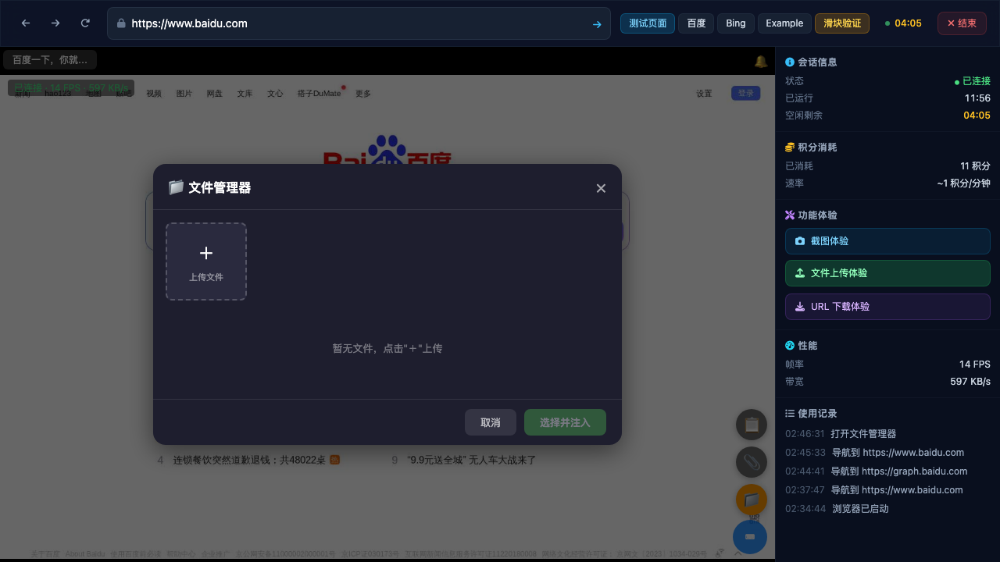
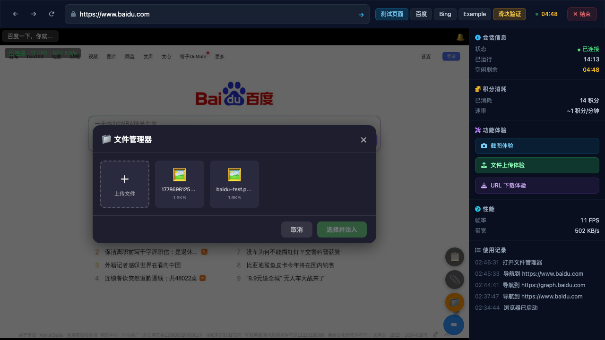
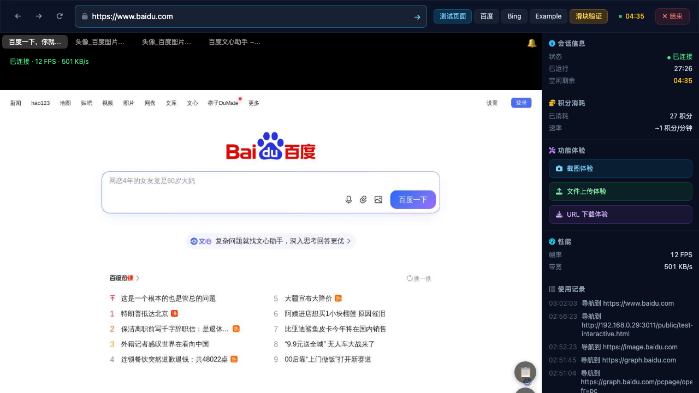
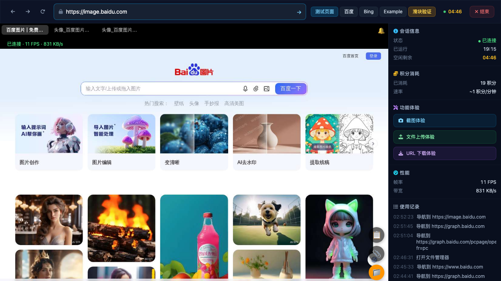
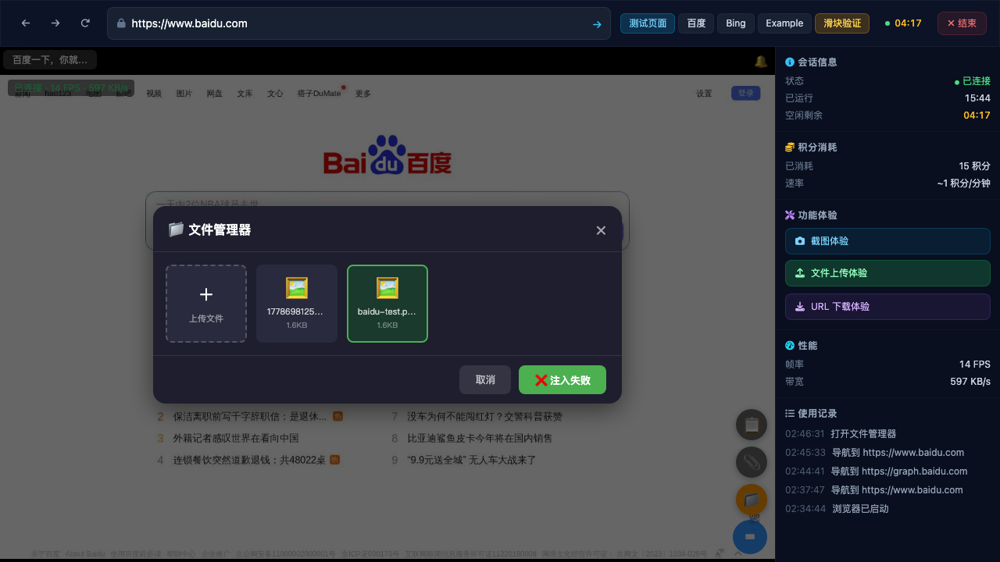
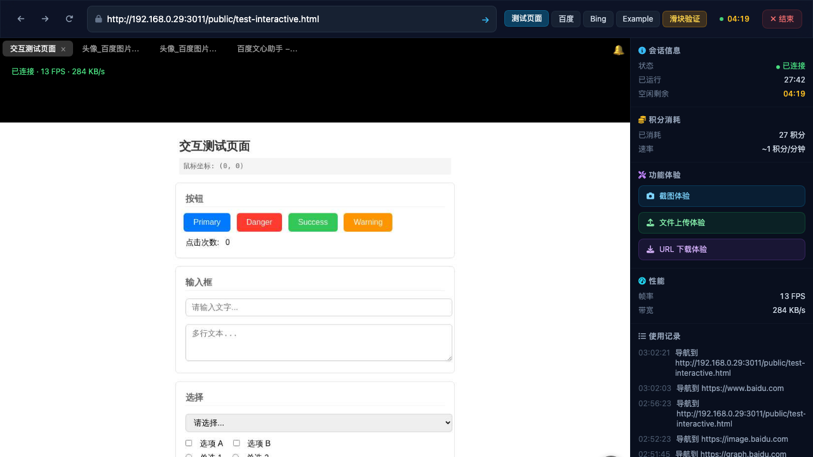
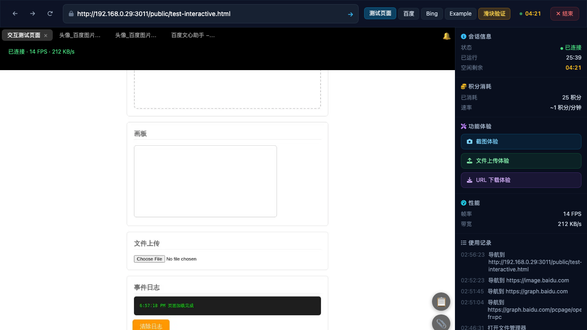

Test: Click "文件上传体验" button on the sidebar → File manager modal opens with upload capability.
Result: ✅ The file manager modal ("文件管理器") opened successfully. It displays an upload area with "+" button, shows uploaded files in a grid, and has "取消" and "选择并注入" action buttons.

Test: Upload a test PNG image through the file manager's upload mechanism.
Result: ✅ Successfully uploaded baidu-test.png (1.6KB) via the viewer's file input. Two file cards appeared in the grid: one auto-named with timestamp prefix and one named "baidu-test.png".

Test: Navigate to Baidu homepage/image search, click the camera icon (相机图标), and verify file manager modal appears.
Result: ❌ Could not trigger the camera icon click in the remote browser. The WebSocket-sent click events (via viewer.send()) were received and forwarded by the viewer but did not produce any visible effect on the remote Baidu page. Multiple coordinate attempts on both www.baidu.com and image.baidu.com failed to activate the camera icon or trigger the native file picker.


Test: Select baidu-test.png in file manager and click "选择并注入" to inject it into Baidu's file input.
Result: ❌ Injection failed ("注入失败"). This is expected because the injection requires an active file input element (<input type="file">) to be open in the remote browser. Since we couldn't click the Baidu camera icon to trigger a file picker, there was no file input to inject into. The injection mechanism works (it changes button to "注入中...") but fails when no file input dialog is active.

Test: Verify copy (📋) and paste (📎) buttons are visible on the test page, test copy and paste functionality.
Result: ⚠️ Buttons are present in the viewer overlay (bottom-right of remote browser view):
_pendingLocalCopy = true), but since no text was selected in the remote browser (keyboard events didn't reach the remote browser), no content was actually copied. The paste button was also clicked but had no local clipboard content to paste.viewer.send() WebSocket event forwarding for mouse/keyboard events is not producing visible effects in the remote browser. This affects both the camera icon click test and the text input test.


viewer.send({type:'event', event:{type:'click', data:{x,y}}}) are received by the WebSocket server but do NOT produce visible effects in the remote browser. Verified the messages are sent correctly (intercepted WebSocket traffic confirms JSON messages with correct format).<input type="file"> dialog is active in the remote browser._pendingLocalCopy=true) but without the ability to type text in the remote browser, the full copy→paste flow cannot be verified.getCoords() function properly maps screen coordinates to remote browser coordinates (1280x800), but the server-side event processing may not be forwarding them correctly to the Playwright browser instance./demo uses a custom viewer (BrowserViewer class) that streams the remote browser via JPEG frames over WebSocket.eventsWs WebSocket connection.